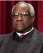

In the screwed up world of politics, where we typically view things through the lens of Democrats and Republicans, I think we lose sight of what is truly important. When a northern general during the Civil War said he hoped God was on their side, Abraham Lincoln responded, "I don't want God on our side, I want to be on God's side."
With this in mind, I came to the conclusion that I couldn't vote for either Donald Trump or Hillary Clinton. I know some will tell me this is a binary choice, and if I don't vote for person X, then the other person will win. I say, if we vote for someone that doesn't have the best interest of the American people, then we all lose anyway.
|
So after careful deliberation, I've decided to vote for Ben Carson. The guy is a pediatric neurosurgeon - so incidentally, he actually has saved black lives. Ben Carson made a tremendous sacrifice going into politics - but he did this for the betterment of our country. So I just wanted to recognize that and say thank you. |
|
|
Now if you don't want to vote for Ben Carson, perhaps consider Clarence Thomas. I'm mildly concerned that there have only been two African American Supreme Court justices in the history of our country (Thurgood Marshall and Clarence Thomas), yet an extremely liberal prejudice in our country has caused Clarence Thomas to be virtually ignored in the new Smithsonian museum featuring African American history (that can't be an accident). If others are outraged by this, perhaps consider writing in Clarence Thomas for president. |
 |
|
If you're a Bernie Sanders supporter and think the election was stolen from you due to collusion between the super delegates, the media, the DNC / Debbie Wasserman Schultz (you know, she was fired for a reason), and the Clinton Foundation, then you can write in Bernie Sanders for president. Wouldn't it be ironic if Bernie Sanders got more votes than Hillary Clinton? |
|
|
If you're a young person and are outraged by the Ponzi schemes that are Obamacare and Social Security, then perhaps you too should write in Bernie Sanders. Everything can't be free, but if they're going to force you to pay for stuff that you'll never benefit from, and on top of that, jack up the national debt (which you will have to pay for), young people probably should vote for a candidate that will change the status quo. |
|
|
As for women, I have little advice for you. This is a highly personal choice loaded with tons of emotion (and as a man, I obviously know nothing of this). My only point is if you want a woman in the White House, are you sure Hillary Clinton is the appropriate role model? I would suggest watching reruns of the presidential debates and give Carly Fiorina a second look. I think she was awesome in those debates, and if I hadn't voted for Ben Carson, I certainly would have voted for her. |
Now I realize that the media will try to convince you that writing in a name for president is throwing away your vote. But don't believe them - that is just the vocal minority relying on our collective ignorance and apathy. Remember, people like Anderson Cooper and Bill O'Reilly make over 20 million dollars a year (and they don't even get paid directly, they get paid indirectly by all of us). So I suggest that we stand up and be heard for a change. If we don't fight back when the bullies try to take our lunch money, they will just keep doing it forever. I guarantee if we do this one time (i.e., write in who we truly want), those running for office next time will not be so quick to take us for granted. We all know they are talking at us, not to us - and that needs to change.
Besides, we don't need to ask permission, and no one can stop us. The courts have mostly1 asserted that it is our legal right to take a picture of our ballot. So when voting, if anyone tries to stop you from taking a picture of your ballot, be polite, ask for a receipt for you ballot (so they don't try to steal your vote), and go immediately to the police and local media. This is our country, this is our election, and we all have a right to be heard. Don't let the vocal minority continue to dictate the direction of our country (because things seem to be getting worse, not better). We all matter, we all should be heard, and we all can be heard. If we post a picture of our ballot online, it will be counted in real time (twitter can do that easily). Voting has already started, so vote as early as possible and get engaged. Remember, this is our country, and those in government work for us, we don't work for them.
When posting to Twitter, consider the following template so that votes can be counted accurately. If you don't want to supply personal demographics, so be it - but the state you live in will likely be helpful.
#writeinvote Ben Carson #state FL #party R #gender M #age 51 #race White #search Darrell Madison Wordpress
Once you open your mind to alternate possibilities, you likely will have lots of good ideas to share. As for me, I offer two books for free on Amazon.com the first day of each month - so if you're interested, check out my blog (search string shown above in twitter post).
Warning - across the country, election law regarding selfies is very inconsistent. For example, in Florida it is illegal, so although I wanted to take a picture of my ballot when I voted, I decided not to (which is why the image attached in this article is from a sample ballot). I consider this voter suppression in that a picture of an official ballot carries a lot more weight than just a mocked up sample ballot (i.e., it is official after all). I'm sure the laws on this will change, but in the mean time, know your state law (here's an article offered by ABC news that will help).
Of course, the fact that states hold separate primaries for the two main political parties leads to an absolute abuse of power. This is partly why we have two of the worst candidates for president in modern history, and it is why so many people are electing to write in a vote. If you want to to read more on this topic, check out Keep Raising the Bar on Amazon.com - it is free the first day of every month.